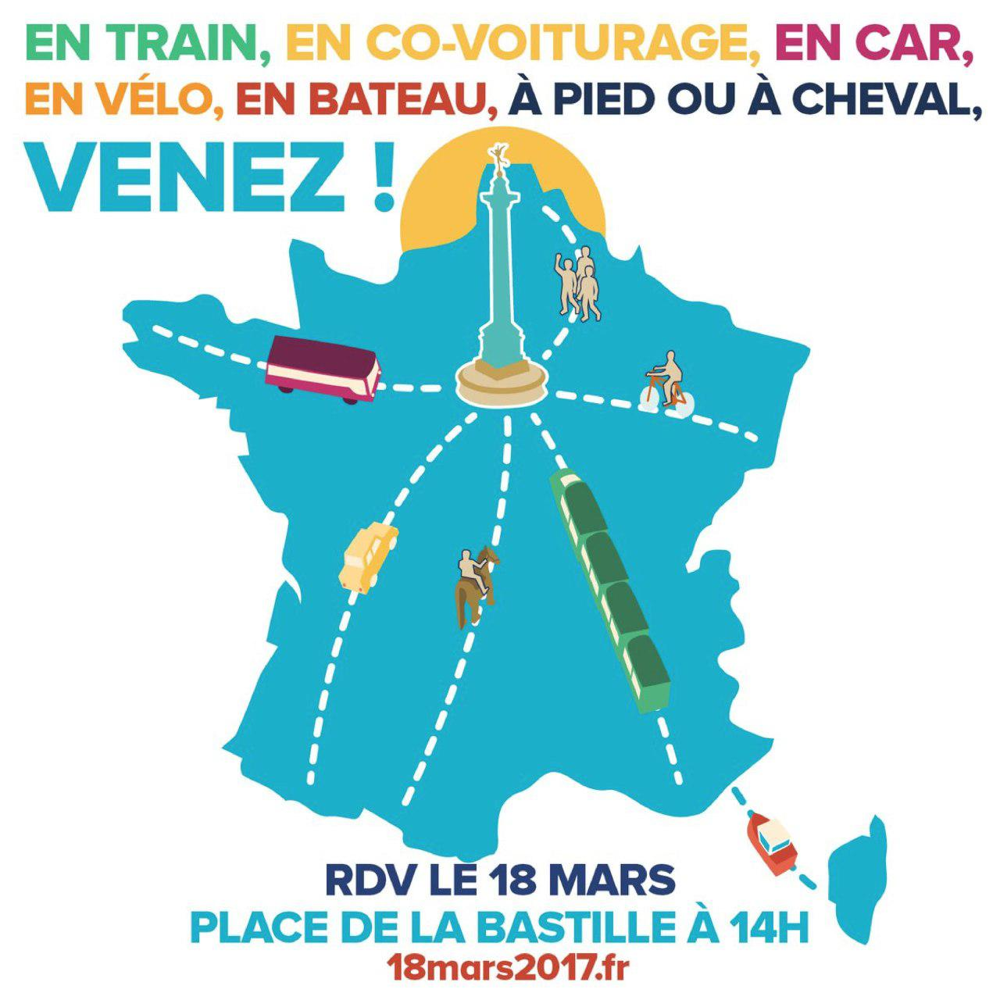

<div class="row">
  <!-- Col 1 -->
  <div class="col-md-8">
    <p>
      
    </p>
    <h3>En direct</h3>
    <div class="row">
      <div style="max-height: 1500px; border-left: 1px solid #DDD; overflow:auto; padding-top: 10px;" id="direct">
        {% assign direct='direct_18mars' %}
      </div>
    </div>
  </div>

  <!-- Col 2 -->
  <div class="col-md-4 col-md-offset-0">

    <!-- Infos -->
    <div class="lead hidden-xs hidden-sm">
      Participez sur <a href="https://twitter.com/search?q=%2318Mars2017">#18Mars2017</a>&nbsp;!
    </div>

    <!-- tchat -->
    <!-- <iframe src="https://www.youtube.com/live_chat?v=WNwngAR4xg4&embed_domain=campagne.jlm2017.fr" width="500" height="600" frameborder="0"></iframe> -->

    <!-- déroulé -->

    <!-- widget twitter -->
    <a class="twitter-timeline"  href="https://twitter.com/hashtag/18Mars2017" data-widget-id="839432817104805892">Tweets sur #18Mars2017</a>
    <script>window.twttr = (function(d, s, id) {
        var js, fjs = d.getElementsByTagName(s)[0],
          t = window.twttr || {};
        if (d.getElementById(id)) return t;
        js = d.createElement(s);
        js.id = id;
        js.src = "https://platform.twitter.com/widgets.js";
        fjs.parentNode.insertBefore(js, fjs);
        t._e = [];
        t.ready = function(f) {
          t._e.push(f);
        };
        return t;
      }(document, "script", "twitter-wjs"));</script>
    <script>window.direct = "/{{ site.data_dir }}/{{ direct }}.yml";</script>
    <script type="text/javascript" src="/main.95ed4e20.js"></script>
  </div>
</div>
